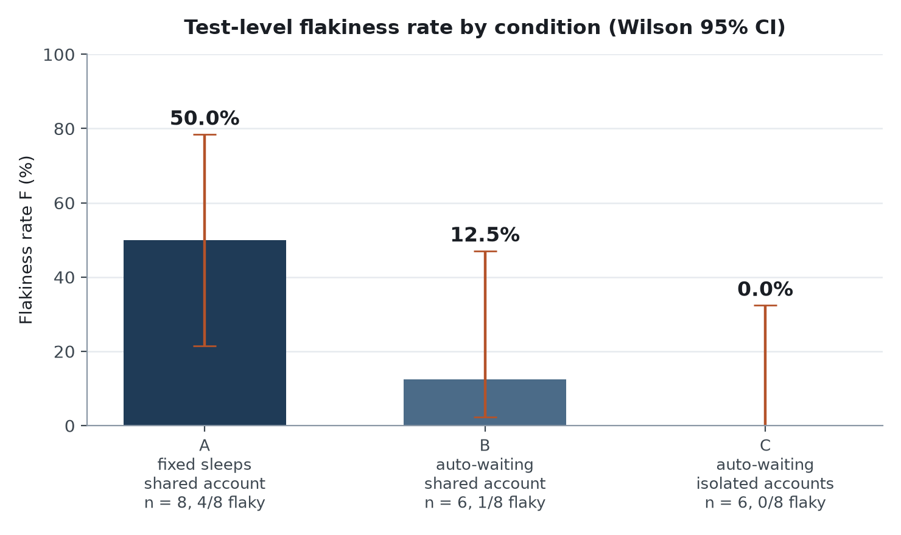

Browser end-to-end tests are the only automated tests that exercise a web application the way a user does, and the ones most likely to be deleted. Asynchronous rendering, variable network timing and shared authentication state make them fail intermittently until nobody trusts them.
Industry reports 16% of Google's test targets showing some flakiness, 4–16% of tests affected at Microsoft, and at least 2.5% of developer time spent investigating, repairing and managing flaky tests.
Three planes, each separately testable — which is what makes the ablation possible.
| Condition | Waiting | Authentication | Isolates |
|---|---|---|---|
| A | fixed sleep | one shared account | nothing |
| B | state-based | one shared account | wait policy |
| C | state-based | per worker | contribution |
A → B measures the reference; B → C measures the contribution on identical code.
Frozen resource envelope (AC-4): 80 ms base latency plus U(0, 240) ms, 100 ms deferred render, 800 ms fixed wait, four workers, three engines. Every repetition starts from freshly seeded state and records the envelope it ran under. Rates carry Wilson 95% intervals, and the repetition count is always reported with the rate, because the flakiness rate is monotone in it.
The rubric has five observable criteria worth 20 points each, frozen before the system it scores was tuned: is the failing step identifiable, is the state at failure visible, is the causal sequence recoverable, can product and test defect be told apart, and is a re-run unnecessary.

| Condition | Reps | Flaky | F | Run-level | Suite |
|---|---|---|---|---|---|
| A fixed sleeps | 8 | 4/8 | 50.0% | 100% | 17.8 s |
| B auto-waiting | 6 | 1/8 | 12.5% | 16.7% | 62.0 s |
| C isolated | 6 | 0/8 | 0.0% | 0.0% | 59.5 s |
The residual failure after B was the shared-account settings collision, and isolation removed it. Cost of determinism: the suite takes 3.4× longer, because correct synchronisation waits for state instead of guessing at a duration.
| KPI | Measure | Value | Verdict |
|---|---|---|---|
| KPI-1 | Flakiness rate | 50 → 12.5 → 0.0% | pass |
| KPI-2 | Cross-browser consistency | — | needs CI |
| KPI-3 | Diagnosis without re-run | 76 → 100 | raters |
| KPI-4 | Recovery under fault injection | 100% (9/9) | pass |
| KPI-5 | Service error rate at load | 0.00% | recorded |
| KPI-6 | Request latency p95 | 319.8 ms | recorded |
All five mandatory negative tests produced their documented safe behaviour: intermittent failure attributed 11/11, shared-state collision reproduced 7/12 rounds and removed 0/48 under isolation, a stripped bundle refused diagnosis instead of guessing, a removed network stream named as a telemetry gap, and a partial failure recovered with 0 duplicates and 0 lost writes across 64 ambiguous responses.
A measured account of what each layer of a browser test-execution system buys: a 75% relative reduction in flakiness from state-based synchronisation, the removal of the residual failure by per-worker state isolation, and a diagnostic instrument that proved its own worth by finding a defect in the evidence path before it found one in the product.